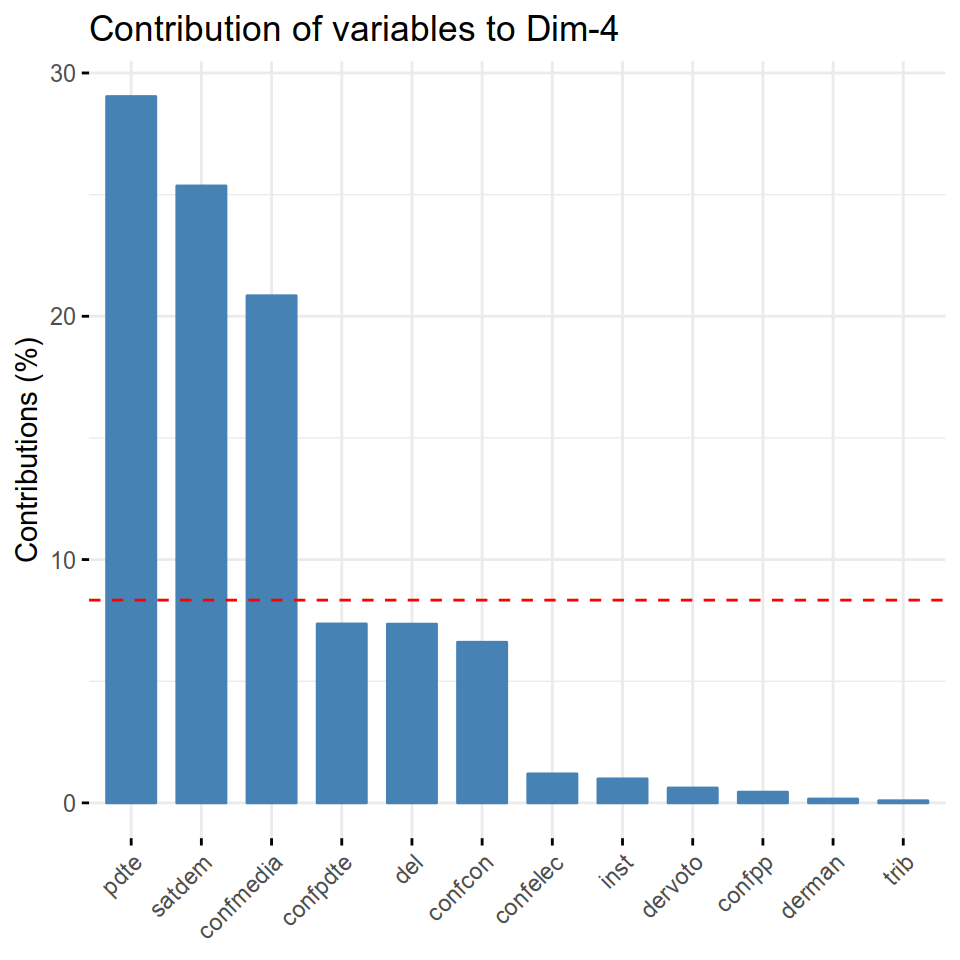
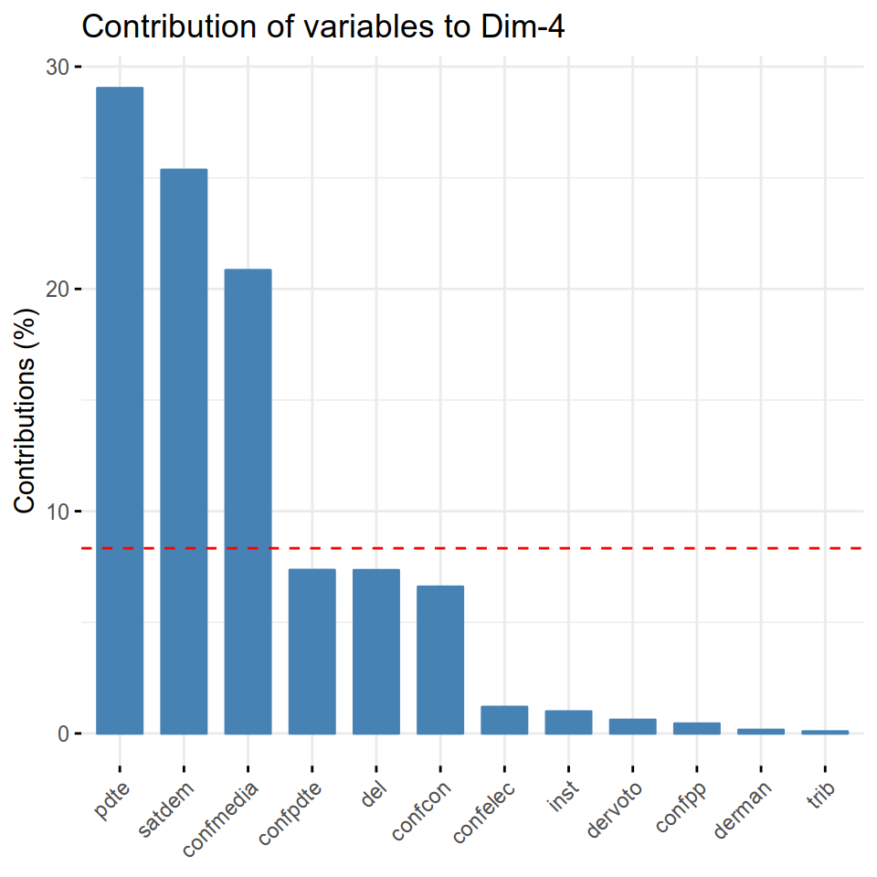

Capítulo 10 Creación de índices con PCA
Por Caterina Labrín y Francisco Urdinez
Lecturas de referencia
Box-Steffensmeier, J. M., Brady, H. E., & Collier, D. (Eds.). (2008). The Oxford handbook of political methodology (Vol. 10).Oxford University Press. Caps.6 y 7: “Measurement” y “Typologies: Forming Concepts and Creating Categorical Variables”.
Goertz, G. (2006). Social science concepts: A user’s guide. Princeton University Press. Capítulo 4 “Incrasing Concept-Measure Consistency”.
Abeyasekera, S. (2005). “Multivariate Methods for Index Construction.” In Household Sample Surveys and Transition Countries.367-387. New York City: DESA/UNSD.
Miller, J. E. (2013). The Chicago guide to writing about multivariate analysis. University of Chicago Press. Cap. 15: “Speaking about Multivariate Analyses”.
Grimm, L. G., & Yarnold, P. R. (2000). Reading and understanding multivariate statistics. American Psychological Association. Cap. 7: “Assessing the validity of measure”.
A esta altura del libro has visto herramientas suficientes como para tener una caja de herramientas que te permita escribir un artículo académico, hacer consultoría o formular políticas públicas. En este capítulo veremos cómo crear índices compuestos a partir de un conjunto de variables que miden una misma variable latente. En toda ciencia social y sobre todo en la ciencia política, constantemente trabajamos con variables sumamente abstractas, que muchas veces son difíciles de medir con un solo indicador. “Democracia” o “capacidad estatal” son conceptos con los que debemos trabajar, pero muchas veces poder construirlos conceptualmente es un poco complejo.
Cuando construimos una medición empírica de un concepto abstracto, además de dar cuenta de su complejidad, queremos que sea válido (ver Grimm y Yarnold 2000 para un excelente resumen sobre diferentes tipos de validez). La validez de constructo, que es la que nos importa aquí, refiere a que el concepto mida lo que dice medir y en disciplinas como la ciencia política siempre debe estar cuestionada, precisamente por lo que anteriormente decíamos de la complejidad de los conceptos con los que trabajamos. Por ejemplo, esto es muy frecuente con las mediciones que existen de democracia. Incluso cuando hemos avanzado enormemente como disciplina, y hoy disponemos de mediciones comparables entre países y a lo largo del tiempo, como Polity y Varieties of Democracy, ambos están sujetos a críticas sobre como miden la variable. Es natural que así sea, de eso se trata la ciencia.
Hay dos formas, sin embargo, de tener confianza respecto a la validez de constructo de nuestra variable de interés. La primera es por validez convergente, es decir, la correlación que mi medida de interés tiene con medidas de otros. Por ejemplo, la democracia tal como la mide V-Dem tiene una correlación de 0.8 con la forma como la mide Polity. Si yo creo una tercera medición, cuya correlación es de 0.70 con Polity y 0.9 con V-Dem podré estar confiado de que las tres variables están aproximándose de manera similar a la variable latente.
La segunda alternativa para tener confianza respecto a la validez de constructo de nuestra variable es por medio de lo que se llama “validez discriminativa”, es decir que nuestro constructo no debería estar altamente correlacionado a variables que nuestro indicador dice no medir. Este concepto se puede ejemplificar bien con la forma en que V-Dem ha elegido crear su índice de democracia (al que llaman de poliarquía): como dice el nombre, lo que hacen es medir variedades de democracia a partir de diferentes sub-dimensiones, a saber, las dimensiones liberal, participativa, deliberativa, electoral e igualitaria. Lo que esperaríamos es que cada una de ellas tenga baja correlación de manera que tengamos confianza en que verdaderamente capturan las diferentes aristas de este concepto multifacético.
El poder crear índices compuestos a partir de varias variables que miden un mismo concepto puede sernos muy útil. El análisis de componentes principales (PCA por sus siglas en inglés) es una técnica muy útil a la hora de combinar distintas variables y veremos cómo hacerlo en R. Consiste literalmente en trabajar con la correlación entre las variables, y dar cuenta de lo que ellas miden en común y lo que cada una mide individualmente que las otras variables no capturan. La técnica de PCA nos entrega distintos “componentes”, que son variables conformadas a partir de una combinación lineal de las variables usadas para crear el índice, y estos componentes pueden ser unidos para generar una nueva variable. Vamos a pasar a un ejemplo práctico para evitar que la discusión se vuelva muy abstracta. Te recomendamos, si vas a usar índices en tus trabajos, que antes leas los capítulos que te hemos recomendado del Oxford handbook of political methodology. También te recomendamos esta visualización creada por el proyecto de visualización de datos Setosa donde podrás ver de qué manera PCA “reduce” muchas variables en la menor cantidad posible de “componentes” maximizando la cantidad de varianza común que ellos tienen. Por ejemplo, verás como a partir de 17 variables con las dietas de los cuatro países que conforman el Reino Unido, PCA logra reducir estas diferencias a dos variables. Como técnica de reducción de dimensiones, PCA logra resultados muy útiles que vamos a explotar a continuación.
10.1 Aplicación en R
Existen hoy en día distintas mediciones de democracia a nivel internacional, tales como Polity o Freedom House, pero ¿qué pasa si queremos saber qué es lo que opinan los ciudadanos que votan en las democracias sobre las instituciones democráticas que respaldan este sistema político?
En América Latina, dado el pasado de gobiernos dictatoriales y el reciente debilitamiento democrático de muchos países, puede ser importante en nuestra investigación considerar la opinión pública sobre las instituciones de sus propios países. Una buena pregunta para hacerse es ¿cómo poder saber cuál es la opinión que los ciudadanos latinoamericanos tienen respecto a las instituciones democráticas de sus países? El Proyecto de Opinión Pública de América Latina ( LAPOP en inglés) – es coordinado desde la Universidad de Vanderbilt y está especializado en conducir estudios de evaluación de impacto, y producir reportes acerca de las actitudes, evaluaciones y experiencias de los individuos de países latinoamericanos. Este proyecto pone a disposición de los investigadores distintas preguntas que, en su conjunto, podrían ayudarnos a aproximar cuanta confianza existe en la región con respecto a instituciones democráticas del país correspondiente a cada individuo.
La aplicación de esta herramienta en R responde a una serie de pasos que nos permitirá generar un índice que caracterice a cada uno de los individuos desde aquellos que sean más propensos a tener confianza en las instituciones formales democráticas y aquellos que no. A partir de este índice individual, luego podremos hacer una gran variedad de estudios, desde comparaciones entre países, a comparaciones por edad, género, renta u otra variable de interés. Partiremos cargando una base con las preguntas.
Es importante como primer paso seleccionar las variables que nos servirán para realizar el PCA, dejando de lado todo aquello que no queramos usar en el índice final. Para esto, generamos una nueva base que contenga sólo las variables que queramos ocupar, en este caso, para conocer cuál es la opinión sobre las instituciones democráticas que tienen los latinoamericanos. Para poder seleccionar las variables y utilizar los pipes cargamos tidyverse. Luego, cargamos la base desde el paquete del libro, paqueteadp.
library(tidyverse)library(paqueteadp)data(lapop)Una vez cargada la base, filtramos aquellas preguntas que nos interesan
+ del: Variable dicotómica que mide el nivel de justificación de golpes de estado militares en el país del encuestado frente a mucha delincuencia. Basada en la pregunta “jc10” de Encuesta LAPOP.
+ pdte: Variable dicotómica que mide el nivel de justificación de cierre del congreso en situaciones difíciles por parte del presidente. Basada en la pregunta “jc15a” de Encuesta LAPOP.
+ trib: Mide en una escala del 1 al 7 el nivel de confianza en los tribunales del país del encuestado. Basada en la pregunta “b1” de Encuesta LAPOP.
+ inst: Mide en una escala del 1 al 7 el nivel de respeto por las instituciones políticas del país del encuestado. Basada en la pregunta “b2” de Encuesta LAPOP.
+ confcon: Mide en una escala del 1 al 7 el nivel de confianza en el Congreso Nacional (poder legislativo) del país del encuestado. Basada en la pregunta “b13” de Encuesta LAPOP.
+ confpdte: Mide en una escala del 1 al 7 el nivel de confianza en el presidente (poder ejecutivo) del país del encuestado. Basada en la pregunta “b21a” de Encuesta LAPOP.
+ confpp: Mide en una escala del 1 al 7 el nivel de confianza en los partidos políticos del país del encuestado. Basada en la pregunta “b21” de Encuesta LAPOP.
+ confmedia: Mide en una escala del 1 al 7 el nivel de confianza en los medios de comunicación del país del encuestado. Basada en la pregunta “b37” de Encuesta LAPOP.
+ confelec: Mide en una escala del 1 al 7 el nivel de confianza en las elecciones del país del encuestado. Basada en la pregunta “b47a” de Encuesta LAPOP.
+ satdem: Variable dicotómica que mide el nivel de satisfacción con la democracia tienen los encuestados. Basada en la pregunta “pn4” de Encuesta LAPOP.
+ dervoto: Mide en una escala del 1 al 7 la satisfacción con la idea de que aquellos que se encuentren en contra del gobierno de turno puedan ejercer el voto en las elecciones del país del encuestado. Basada en la pregunta “d1” de Encuesta LAPOP.
+ derman: Mide en una escala del 1 al 7 la satisfacción con la idea de que aquellos que se encuentren en contra del gobierno de turno puedan llevar a cabo manifestaciones pacíficas para expresar su punto de vista. Basada en la pregunta “d2” de Encuesta LAPOP.
Estas variables pueden explorarse gráficamente antes de pasar a la creación del índice. Por ejemplo, podemos ver por país la confianza que sus ciudadanos tienen en las elecciones
lapop <- lapop %>%
group_by(paisnom) %>%
mutate(confelec_prom = mean(confelec)) %>%
ungroup()
ggplot(lapop, aes(x = confelec)) +
geom_histogram() +
labs(title="Confianza en las elecciones",x="En azul el promedio de cada país", y = "conteo")+
facet_wrap(~ paisnom) + geom_vline(aes(xintercept=(confelec_prom)),
color="blue", linetype="dashed", size=1)Figura 10.1: En la figura vemos el valor promedio de confianza de las elecciones en azul y la distribución de la variable para cada país
Vamos a filtrar nuestras variables de interés, esto quiere decir que dejamos fuera toda variable que no sea proxy de democracia, por ejemplo la variable paisnom que indica el país de cada individuo no debería ser incorporada.
datos_pca_lapop <- lapop %>%
select(del, pdte, trib, inst, confcon, confpdte,
confpp, confmedia, confelec, satdem, dervoto, derman) %>%
mutate_all(as.numeric)Esta data contiene doce preguntas de la encuesta de LAPOP, realizadas a una selección de cerca de 7000 personas en 10 países latinoamericanos. El cuestionario entero puede accederse en este link. Este primer paso es fundamental. Elegir bien las variables que van a integrar nuestro índice merece mucha reflexión y debe haber justificación teórica para cada variable. Como se dice en la jerga: garbage in, garbage out. Por eso, reflexiona sobre cuál es el concepto o variable latente que estas intentando medir empíricamente (en este caso, la opinión individual sobre las instituciones democráticas), seleccionando las variables que realmente necesites a la hora de construir el índice. Si agregamos variables que no se condicen realmente con aquello que queremos medir, el PCA como herramienta nos arrojará un resultado que no servirá de mucho.
Ya habiendo seleccionado las variables, el siguiente paso es observar la correlación entre ellas.
Esto sirve también para saber cómo se relacionan las variables elegidas, y además para ver si hay correlaciones extremadamente altas entre dos o más variables ya que si existe el caso en que tengamos dos o más variables con alta correlación entre ellas, éstas tendrán enorme influencia sobre el resultado de nuestro índice (esto quedará más claro en un segundo cuando hablemos de los componentes).
La mejor alternativa para observar correlación entre variables creemos que es con el paquete GGally. A mayor intensidad del color, más fuerte la correlación. En azul tendremos correlaciones negativas, y en rojo correlaciones positivas.
library(GGally)
ggcorr(datos_pca_lapop, label = T)
Figura 10.2: Matriz de correlación de las variables elegidas para nuestro índice
Lo que vemos es que las variables sobre confianza están correlacionadas de manera positiva. Es decir, quien confía en el presidente tiende a confiar también en medios, elecciones, etc.
Una vez que observamos las correlaciones, pasamos al próximo paso que es el de generar análisis de componentes principales con el paquete FactoMineR de la siguiente forma:
library(FactoMineR)
pca_1 <- PCA(datos_pca_lapop, graph = F)Lo que obtendremos es un componente (R las llama dimensiones) por cada variable que hemos agregado al análisis. Como utilizamos doce variables, esperamos doce componentes. Estos componentes son variables que capturan la correlación entre si que todas ellas tienen. Cada dimensión tiene su valor propio o eigenvalue y el porcentaje de varianza que esta dimensión representa. Ambos valores que podemos encontrar con el paquetefactoextra.
library(factoextra)
get_eig(pca_1)
## eigenvalue variance.percent cumulative.variance.percent
## Dim.1 3.44 28.7 29
## Dim.2 1.48 12.3 41
## [ reached getOption("max.print") -- omitted 10 rows ]Vea que la primera dimensión condensa el 29% de la varianza común entre las variables. Antes de continuar con estos, nos vamos a detener un minuto así explicamos bien la forma en que estas dimensiones son creadas y qué representan.
Ahora detengámonos un segundo para hacer un ejercicio teórico para entender cómo funciona PCA: Imagine que en vez de las doce variables tenemos apenas dos, y que estas variables tienen una correlación baja entre ellas. De esta forma, ambas variables se verían de la siguiente forma en un scatterplot:
n.casos <- 240
n.vars <- 1
set.seed(26)
simulacion <- rnorm(n.vars, 0, 1/4)
x <- matrix(rnorm(n.casos * (n.vars+1)), nrow=n.casos)
beta <- rbind(c(1,rep(0, n.vars)), c(0,rep(1, n.vars)), cbind(rep(0,n.vars), diag(simulacion)))
cor(x)
## [,1] [,2]
## [1,] 1.00 -0.12
## [2,] -0.12 1.00
plot(data.frame(x)) Figura 10.3: Scatterplot de dos variables cuya correlación es cercana a 0
Si realizaramos un PCA entre ambas, veríamos que los dos componentes creados a partir de estas dos variables se dividen, más o menos equitativamente, la varianza total explicada.
peso.componentes <- lapply(2:dim(beta)[1], function(k) prcomp(x[, 1:k], scale=T))
grafico <- lapply(peso.componentes, summary)
par(mfrow=c(1,1))
grafico <- lapply(peso.componentes, plot)Figura 10.4: En esta figura vemos nuestros dos componentes, y que ambos tienen eigenvalores similares
Sin embargo, a medida que agregamos variables que correlacionan fuertemente entre si, todas estas se condensarán en el primer componente que nos dará PCA. Es como si toda la correlación en común se condensara en una sola variable. Veamos cómo sería el ejemplo si tuviéramos una tercer variable, fuertemente correlacionada con \(x2\) pero poco correlacionada a \(x1\):
n.casos <- 240
n.vars <- 2
set.seed(26)
simulacion.2 <- rnorm(n.vars, 0, 1/4)
x <- matrix(rnorm(n.casos * (n.vars+2)), nrow=n.casos)
beta <- rbind(c(1,rep(0, n.vars)), c(0,rep(1, n.vars)), cbind(rep(0,n.vars), diag(simulacion.2)))
y <- x%*%beta
cor(y)
## [,1] [,2] [,3]
## [1,] 1.00 -0.10 -0.12
## [2,] -0.10 1.00 0.82
## [ reached getOption("max.print") -- omitted 1 row ]
plot(data.frame(y)) Figura 10.5: Ahora hemos incorporado una tercer variable fuertemente correlacionada con una de las variables que teníamos pero no con la otra
En este caso, el primer componente del PCA representa casi \(2/3\) de la varianza explicada.
peso.componentes <- lapply(3:dim(beta)[2], function(k) prcomp(y[, 1:k], scale=TRUE))
grafico <- lapply(peso.componentes, summary)
par(mfrow=c(1,1))
grafico <- lapply(peso.componentes, plot)Figura 10.6: En este caso el primer componente condensa aún más varianza, luego de agregar la tercera variable
Veamos, entonces, que sucedería si agregáramos tres variables más que correlacionan fuertemente con \(x2\) pero poco con \(x1\). Aquí notaremos que el primer componente del PCA concentra aún más el porcentaje de varianza explicada.
n.casos <- 240
n.vars <- 5
set.seed(26)
simulacion.3 <- rnorm(n.vars, 0, 1/4)
x <- matrix(rnorm(n.casos * (n.vars+2)), nrow=n.casos)
beta <- rbind(c(1,rep(0, n.vars)), c(0,rep(1, n.vars)), cbind(rep(0,n.vars), diag(simulacion.3)))
y <- x%*%beta
cor(y)
## [,1] [,2] [,3] [,4] [,5] [,6]
## [1,] 1.00 -0.11 -0.12 -0.10 -0.11 -0.12
## [ reached getOption("max.print") -- omitted 5 rows ]
plot(data.frame(y)) Figura 9.1: Ahora agregamos más variables correlacionadas con x2 al análisis
Al extraer con PCA los seis componentes, lo que veremos es que el primero de ellos concentra casi \(5/6\) positiva entre estas variables. A medida que agregamos una variable muy correlacionada a \(x2\), el componente 1 se va volviendo más y más relevante en el PCA.
peso.componentes <- lapply(3:dim(beta)[2], function(k) prcomp(y[,1:k], scale=TRUE))
# grafico <- lapply(p, summary)
par(mfrow=c(1,1))
grafico <- lapply(peso.componentes, plot)
Figura 10.7: En esta figura verás como a medida que agregamos una variable más a la correlación (primero x4, luego x5 y finalmente x6 el primer componente condensa más varianza común entre las variables
Así, lo que te queremos mostrar es como PCA aglutina las correlaciones altas entre variables y las condenas en un único componente. Cuanto más parecidas sean las variables (correlaciones altas y en la misma dirección) se necesitarán menos componentes para capturar toda la complejidad de los datos.
Volviendo a nuestro ejemplo de LAPOP, una vez que obtenemos los componentes ¿cuál es el próximo paso? Bueno, como queremos reducir las 12 variables de LAPOP en un solo índice, tenemos que decidir cuantos componentes vamos a retener para seguir trabajando. Si retenemos los 12 componentes no descartamos nada de la información original pero tampoco ganamos nada en haber hecho el ejercicio de reducción. Si retenemos apenas el primero, nos quedamos con 29% de la varianza. ¿Cuál es la regla que se usa para maximizar la cantidad de componentes que se retienen?
fviz_eig(pca_1, choice = "variance", addlabels = T)Figura 10.8: Screeplot de todas las dimensiones del PCA con la varianza explicada de cada uno de ellos
Lo que se hace es expresar este mismo gráfico con el eigenvalor que PCA da a cada componente, y retener aquellos cuyo valor es mayor a 1. De esta forma, retendríamos 4 componentes, que sumados representan 59.25% de la varianza.
fviz_eig(pca_1, choice = "eigenvalue", addlabels = T)
Figura 10.9: Screeplot de todas las dimensiones del PCA con la varianza explicada de cada uno de ellos
Nada mal, cuatro variables expresan 60% de la varianza acumulada de las 12 originales. Ahora, el siguiente paso es lograr que estas 4 se transformen en una sola. Podemos ver que variables “alimentaron” cada uno de los cuatro componentes que hemos retenido.
fviz_contrib(pca_1, choice = "var", axes = 1)
fviz_contrib(pca_1, choice = "var", axes = 2)
fviz_contrib(pca_1, choice = "var", axes = 3)
fviz_contrib(pca_1, choice = "var", axes = 4) 

Figura 9.2: De esta manera podemos saber cuales variables contribuyen a cada componente
Por ejemplo, el primer componente es el más diverso pero se alimenta en gran medida de las variables de confianza. Si recuerdas la matriz de correlación que hicimos con GGally, todas estas variables tenían correlaciones altas entre sí. El segundo componente se alimenta de la correlación fuerte entre derman y dervoto. La línea roja punteada nos expresa el valor que asumiría un escenario en el que todas las variables contribuyen en igual medida, es decir \(1/12\) (8.33%), y nos sirve apenas como referencia visual.
Para poder condensar los componentes elegidos en una sola variable es necesario recordar cuanta varianza acumulada representan del total. Habíamos visto que los cuatro componentes representaban casi 60% de la varianza total: El primer componente un 28.7%, el segundo componente un 12.3%, el tercer componente un 10.3% y el cuarto componente un 7.9%. El siguiente paso consiste en sumar estos cuatro componentes, pero ponderando cada uno por el porcentaje de la varianza que representan. Lo hacemos de la siguiente forma:
datos_pca_final <- pca_1$ind$coord%>%
as_tibble()%>%
mutate(pca_01 = (Dim.1 * 28.7 + Dim.2 * 12.3 + Dim.3 * 10.3 + Dim.4 * 7.9) / 60)
lapop <- lapop %>%
bind_cols(datos_pca_final %>% select(pca_01))De esta forma, hemos creado una única variable, que llamamos pca_01. ¡Estamos muy cerca de que esta variable sea nuestro indicador de valoración de la democracia! Sucede que la variable pca_01 está en una escala poco amigable. Idealmente queremos que nuestro indicador oscile de 0 a 1, de 0 a 10, o 0 a 100 de tal forma que sea más fácil su interpretación. Lo haremos para que sea de 0 a 100, si quieres que sea de 0 a 10 o de 0 a 1 tienes que reemplazar el 100 de la formula a continuación por el número que te interese.
rescale01 <- function(x) { rng <- range(x, na.rm = TRUE)
(x - rng[1]) / (rng[2] - rng[1])}
lapop <- lapop %>%
mutate(indice_democracia = rescale01(pca_01)*100)%>%
select(indice_democracia, everything())Veamos como se ve la densidad de nuestro nuevo índice:
densidad_indice <- ggplot(data = lapop,
mapping = aes(x = indice_democracia)) +
labs(x="índice de confianza en la democracia", y = "densidad") +
geom_density()
densidad_indice
Figura 8.6: Densidad el índice que acabamos de crear
Ahora que tenemos el índice listo, podemos hacer todo tipo de análisis. Por ejemplo, podemos hacer comparación por países. Si tuviéramos variables individuales, podríamos proceder a modelos de regresión con controles por género, ideología, renta, nivel educativo. Para ello, puedes usar lo aprendido en los capítulos 7 y 8.
lapop <- lapop %>%
group_by(paisnom) %>%
mutate(democracia_prom = mean(indice_democracia))
ggplot(lapop, aes(x = indice_democracia)) +
geom_density() +
labs(title="Confianza en la democracia en América Latina (N = 7000)",x="En azul el promedio de cada país", y = "densidad")+
facet_wrap(~ paisnom) + geom_vline(aes(xintercept=(democracia_prom)),
color="blue", linetype="dashed", size=1)Figura 8.7: Media y distribución de confianza en la democracia para cada país de América del Sur
Ejercicios antes de continuar al próximo capítulo - Utilizando el índice de confianza en la democracia en América Latina que acabamos de crear, analice con modelos de regresion lineales que variables tienen alto poder explicativo sobre esta variable ¿Son la ideología, renta o edad variables importantes?
- Utilizando la base de LAPOP (puedes consultar el codebook aquí) elige un set de variables para crear un índice de antiamericanismo siguiendo los lineamientos del capítulo.